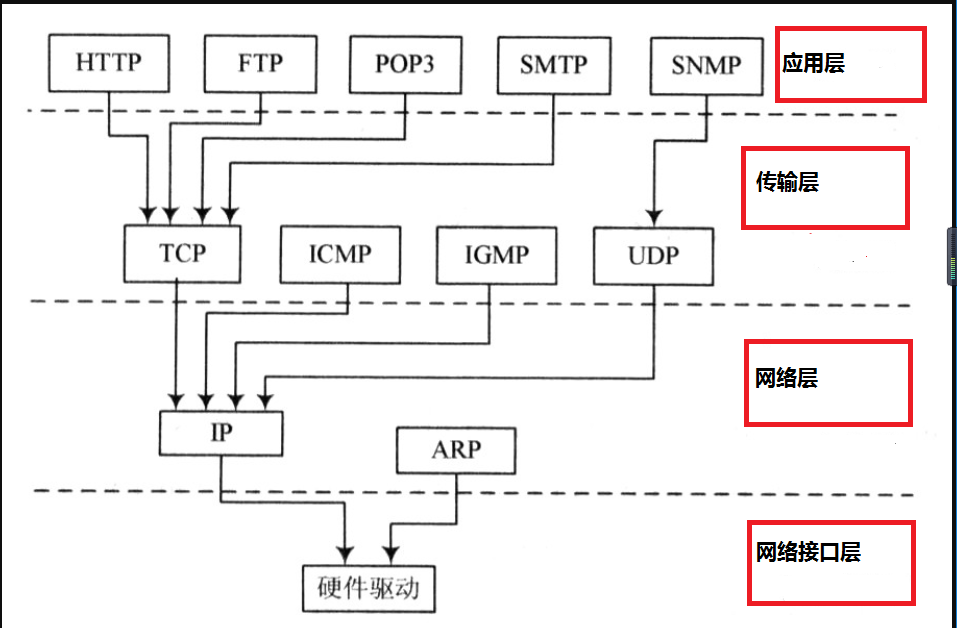

一、NetworkStream的作用
和先前的流有所不同，NetworkStream的特殊性可以在它的命名空间中得以了解（System.Net.Sockets），聪明的你马上就会反应过来：既然是在网络中传输的流，那必然有某种协议或者规则约束他，不错，这种协议就是Tcp/Ip协议。这个是什么东西？别急，我先让大家了解以下NetworkStream的作用：如果服务器和客户端之间基于TCP连接的，他们之间能够依靠一个稳定的字节流进行相互传输信息，这也是NetworkStream的最关键的作用，有了这个神奇的协议，NetworkStream便能向其他流一样在网络中（进行点对点的传输），这种传输的效率和速度是非常高的（UDP也很快，稍后再介绍），如果大家对这个概念还不是很清晰的话，别怕，后文中我会更详细的说明。
这里有5点大家先了解以下就行：
1、NetworkStream只能在具有TCP/IP协议之中，如果用在UDP中编译不报错，会报异常。
2、NetworkStream是面向连接的。
3、在网络中利用流的形式传递信息。
4、必须借助Socket（也称之为流式socket），或者使用一些返回的返回值，例如TcpClient类的GetStream方法。
5、用法和普通流方法几乎一模一样，但具有特殊性。
二、简单介绍一下TCP/IP协议和相关层次
提到协议相信许多初学者或者没搞过这块的朋友会一头雾水，不过别怕，协议也是人定的，肯定能搞懂：
其实协议可以这么理解，是人为制定的为某个活动定义的一系列规则和约束，就好比足球比赛的红牌黄牌，这是由世界足联制定的协议或者规范，一旦不按这个协议，足球赛肯定会一片混乱。
进入正题：
TCP/IP
全称：Transmission Control Protocol/Internet Protocol（传输控制协议/因特网互联协议，又名网络通讯协议）
这个便是互联网通信中的最基本协议，tcp/ip定义了电子设备如何进入到互联网，以及数据如何在互联网中传递。既然有了协议，但是空头支票还是不行的，就好比足联制定了这些规则，但是没有裁判在球场上来实施这些规则一样，tcp/ip协议也有它自己的层次结构，关于他的层次结构，大家看图就能明白：

发送数据：
大家不用刻板的取理解这个协议，我还是用我们最普通的浏览网页来给大家讲解一下，首先，打开浏览器输入一个Url，这时候，应用成会判断这个要求是否是http的，然后，http会将请求信息交给传输层来执行，传输层主要负责信息流的格式化并且提供一个可靠的传输，这时候，TCP和UDP这两个协议在这里起作用了，TCP协议规定：接收端必须发回确认，并且加入分组丢失，必须重新发送，接着网络层得到这些需要发送的数据，（网络中的IP协议非常重要，不仅是IP协议，还有ARP协议（查找远程主机MAC地址）），这时候网络层会命令网络接口层取发送这些信息（IP层主要负责的是在节点之间的数据报传送，这里的节点是一台网络设备，比如计算机，大家便可以理解为网络接口层的设备），最终将请求数据发送至远程网站主机后等待远程主机发送来信息。
接收数据：
好了，远程网站主机会根据请求信息（ip，数据报等等）发送一系列的网页数据通过网线或者无线路由，回到网络接口层，然后逐级上报，通过网络层的IP然后通过传输层的一系列格式化，最终通过http返回至浏览器显示网页了。
基于篇幅的关系，还有其他的协议大家可以自行去了解学习，相信园子里很多大神都写过关于http协议的博文，大家也可以去学习一下。
三、简单说明一下TCP和UDP的区别
TCP：
1、TCP是面向连接的通信协议，通过三次握手建立连接
2、TCP提供的是一种可靠的数据流服务，采用“带重传的肯定确认”技术来实现传输的可靠性
UDP：
1、UDP是面向无连接的通信协议，UDP数据包括目的端口号和源端口号信息，由于通讯不需要连接，所以可以实现广播发送
2、UDP通讯时，不需要接受方确认，属于不可靠传输，可能会出现丢包现象，实际应用中要求在程序员编程验证。
3、由于上述2点的关系，UDP传输速度更快，但是安全性比较差，很容易发生未知的错误，所以本章的NetworkStream无法使用在UDP的功能上。
四、简单介绍下套接字（Socket）的概念
关于Socket的概念和功能可能可以写很长的一篇文章来介绍，这里大家把socket理解tcp/ip协议的抽象，并且能够实现tcp/ip协议栈的工具就行，换句话说，我们可以利用socket实现客户端和服务端双向通信，同样，对于socket最关键的理解还没到位，很多新人或者不常用的朋友会问：socket功能到底时什么？怎么工作的？
再次举个例子，女朋友打电话给我，我可以选择接通或者拒绝，如果我接了她的电话，也就是说，我和她通过电话连接（Connect），那电话就是“Socket”，女友和我都可以时客户端或者服务端，只要点对点就行，我们的声音通过电话传递，但是具体传输内容不归Socket管辖，Socket的直接任务可以归纳为以下几点：
1、创建客户端或服务端
2、服务端或客户端监听是否有服务端或客户端传来的连接信息（Listening）
3、创建点对点连接（Connect）
4、发送accept信息给对方，表示两者已经建立连接，并且可以相互传递信息了（Send）
5、具体发送什么信息内容不是Socket管辖的范围，但是必须是Socket进行发送的动作
6、统里可以通过Socket去接收对方发来的信息，并加以处理
后面我们会简单的写一个Socket的示例
五、简单介绍下TcpClient、TcpListener、IPEndPoint类的作用
1、TcpClient
此类事微软基于Tcp封装类，用于简化Tcp客户端的开发，主要通过构造带入主机地址或者IPEndPoint对象，然后调用Connect进行和服务器点对点的连接，连接成功后通过GetStream方法返回NetworkStream对象。
2、TcpListener
此类也是微软基于Tcp封装类，用于监听服务器或者客户端的连接请求，一旦有连接请求信息，理解交给TcpClient的AcceptTcpClient方法捕获，Start方法用于开始监听。
3、IPEndPoint
处理IP地址和端口的封装类
4、IPAddress
提供包含计算机在IP网络上的地址的工具类
六、使用NetworkStream的注意事项和局限性
从这里开始，才真正的介绍NetworkStream，但前面的一再说明NetworkStream背后那个必须掌握的知识点，这样才能在实际变成过程中很快上手，毕竟NetworkStream的工作环境和其他流有很大的差别，再回到第一节关于NetworkStream的知识点，在使用时有几点必须注意：
1、再次强调NetworkStream是稳定的，面向连接的，所以它只适用TCP协议的环境下工作，所以一旦在UDP环境中，虽然编译不会报错，但是会跳出异常。
2、我们可以通过NetworkStream简化Socket开发
3、如果要建立NetworkStream一个新的实例，则必须使用已经连接的Socket
4、NetworkStream使用后不会自动关闭提供的socket，必须使用NetworkStream构造函数时是定的socket所有权（NetworkStream的构造函数中设置）
5、NetworkStream支持异步读写操作。
NetworkStream的局限性：
1、可惜的是NetworkStream基于安全上的考虑不支持Position属性或Seek方法，寻找或改变流的位置，如果吃土强行使用会报出NotSupport的异常
2、支持传递数据的种类没有直接使用Socket来的多。
七、NetworkStream的构造
1、NetworkStream(Socket socket)：
为制定的Scoket创建NetworkStream类的新实例
2、NetworkStream(Socket socket,Boolean ownsSocket)：
用来指定Socket所属权为是定的Socket，ownsSocket表示指示NetworkStream是否拥有该Socket
3、NetworkStream(Socket socket,FileAccess fileAccess)：
用指定的访问权限为指定的Socket创建FileAccess值得按位组合，这些值指定授予所低通得Scoket上的NetworkStream的访问类型
4、NetworkStream(Socket socket,FileAccess fileAccess,Boolean ownsSocket)：
以上就是NetworkStream常用的几个构造
对于NetworkStream构造函数的理解相信大家经过前文的解释也能够掌握了，但是有几点必须强调以下
1、如果用构造产生NetworkStream的实例，则必须使用连接的Socket
2、如果该NetworkStream拥有对Socket的所有权，则在使用NetworkStream的Close方法时，会同时关闭Socket，否则关闭NetworkStream时不会关闭Socket
3、能够创建对指定Socket带有读写权限的NetworkStream
八、NetworkStream的属性
1、CanSeek：用于指示流是否支持查找，它的值始终为false
2、DataAvailable：指示在要读取的NetworkStream上是否有可用的数据，一般来说通过判断这俄格属性来判断NetworkStream是否有数据
3、Length：NetworkStream不支持使用Length属性，强行使用会发生NotSupportedException异常
4、Position：NetworkStream不支持使用Position属性，强行使用会发生NotSupportedException异常
九、NetworkStream的方法
同样，NetworkStream的方法大致重写或继承了Stream的方法，但是以下方法必须注意：
1、int Read(byte[] buffer,int offset,int size)
该方法将数据读入buffer参数并返回成功读取的字节数，如果没有可以读取的数据，则Read方法返回0，Read操作将读取尽可能多的可用数据，直至达到由size参数指定的字节数为止。如果远程主机关闭了连接并且已接受到所有可用数据，Read方法将立即完成并返回0字节。
2、long Seek(long offset,SeekOrigin origin)
将流的当前位置设置为给定值，此方法当前不愁支持，总是引发NotSupportException
3、void Write(byte[] buffer,int offset,int size)
Write方法在指定的offset处启动，并将buffer内容的size字节发送到网络，Write方法将一直处于阻止状态（可以用异步解决），知道发送了请求的字节数或引发SocktException为止，如果收到ScoketException，可以使用SocketException.ErrorCode属性获取特定的错误代码。
十、NetworkStream的简单示例
创建一个客户端向服务端传输图片的小示例
服务端一直监听客户端传来的图片信息
服务端代码：
1 class Program
2 {
3 //全局tcpClient
4 private static TcpClient _client;
5 //文件流建立到磁盘上的读写流
6 static FileStream fs=new FileStream("F:\\abc.jpg",FileMode.Create);
7 //buffer
8 private static int bufferlength = 200;
9 private static byte[] buffer = new byte[bufferlength];
10 //网络流
11 private static NetworkStream _ns;
12 static void Main()
13 {
14 ConnectAndListen();
15 // Console.ReadKey();
16 }
17
18 static void ConnectAndListen()
19 {
20 //服务端监听任何Ip,但是端口号时80的连接
21 TcpListener listener=new TcpListener(IPAddress.Any,9090);
22 //监听对象开始监听
23 listener.Start();
24 while (true)
25 {
26 Console.WriteLine("等待连接");
27 //线程会挂在这里,直到客户端发来连接请求
28 _client = listener.AcceptTcpClient();
29 Console.WriteLine("已连接");
30 //得到从客户端传过来的网络流
31 _ns = _client.GetStream();
32 //如果网络流中由数据
33 if (_ns.DataAvailable)
34 {
35 //异步读取网络流中的byte信息
36 _ns.BeginRead(buffer, 0, bufferlength, ReadAsyncCallBack, null);
37 }
38 }
39 }
40
41 /// <summary>
42 /// 异步读取回调函数
43 /// </summary>
44 /// <param name="result"></param>
45 static void ReadAsyncCallBack(IAsyncResult result)
46 {
47 int readCount;
48 //获得每次异步读取数量
49 readCount = _client.GetStream().EndRead(result);
50 //如果全部读完退出,垃圾回收
51 if (readCount<1)
52 {
53 _client.Close();
54 _ns.Dispose();
55 fs.Dispose();
56 return;
57 }
58 //将网络流中的图片数据段顺序写入本地
59 fs.Write(buffer,0,bufferlength);
60 //再次异步读取
61 _ns.BeginRead(buffer, 0, bufferlength, ReadAsyncCallBack, null);
62 }
63 }客户端代码：
1 class Program
2 {
3 static void Main(string[] args)
4 {
5 SendImageToServer(@"E:\111.jpg");
6 }
7
8 static void SendImageToServer(string imgUrl)
9 {
10 if (!File.Exists(imgUrl))
11 {
12 return;
13 }
14 //创建一个文件流打开图片
15 FileStream fs = File.Open(imgUrl, FileMode.Open);
16 //声明一个byte数组接收图片byte信息
17 byte[] fileBytes = new byte[fs.Length];
18 using (fs)
19 {
20 //将图片byte信息读入byte数组中
21 fs.Read(fileBytes, 0, fileBytes.Length);
22 }
23 //找到服务器的IP地址
24 IPAddress address = IPAddress.Parse("127.0.0.1");
25 //将建TcpClient对象实现与服务器的连接
26 TcpClient client = new TcpClient();
27 //连接服务器
28 client.Connect(address, 9090);
29 using (client)
30 {
31 //连接完服务器后便在客户端和服务器之间产生一个流的通道
32 NetworkStream ns = client.GetStream();
33 using (ns)
34 {
35 //通过此通道将图片数据吸入网络流,传向服务器接收
36 ns.Write(fileBytes, 0, fileBytes.Length);
37 }
38 }
39 }
40 }这样就可以通过socket把图片传递过去了。
好了，关于NetworkStream的相关知识就介绍到这里了~